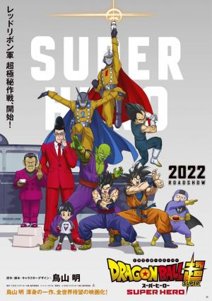

hola putos soy spiderman
Tras descubrirse la identidad secreta de Peter Parker como Spider-Man, la vida del joven
se vuelve una locura. Peter decide pedirle ayuda al Doctor Extraño para recuperar su vida.
Pero algo sale mal y provoca una fractura en el multiverso
Pre-Order
Read More
DBZ:La Resureccion de Freezer
Sinopsis
Sorbet y Tagamo, antiguos miembros de élite del ejército de Freezer, llegan
a la Tierra con la intención de utilizar las Bolas de Dragón para resucitar a su líder y
llevar a cabo su venganza contra los Saiyajin. Para poder detenerlos y salvar al mundo,
Goku y Vegeta tendrán que alcanzar el nivel de auténticos dioses.
Pre-Order
Read More
DBZ: La batalla de los dioses
Sinopsis
Beerus, el dios de la destrucción, ha despertado después de años de letargo.
Al escuchar que un súper saiyan logró derrotar a Freezer, viaja a la Tierra para retarlo.
Goku deberá prepararse para el combate más difícil de su vida.
Pre-Order
Read More
DBSuper: Broly
Sinopsis
La paz ha regresado una vez más a la Tierra tras el Torneo de Poder.
Al descubrir que en los diferentes universos hay seres increíblemente poderosos que
aún no ha visto, Goku tiene intención de seguir entrenando para hacerse aún más fuerte.
Entonces, un día, un saiyan llamado Broly al que nunca antes han visto se presenta ante
Goku y Vegeta.
Pre-Order
Read More
DBSuper: Super Hero

Sinopsis
El Ejército de la Cinta Roja (Red Ribbon cuya sigla es RR) era el
más poderoso de la Tierra hasta que entró en conflicto con Goku mientras buscaba
las bolas del dragón. Luego el Doctor Gero buscó venganza creando androides e
incluso a Célula, un rival extremadamente poderoso para los héroes. Ahora, esta
malvada organización regresará en la película Dragon Ball Super: Super Hero.